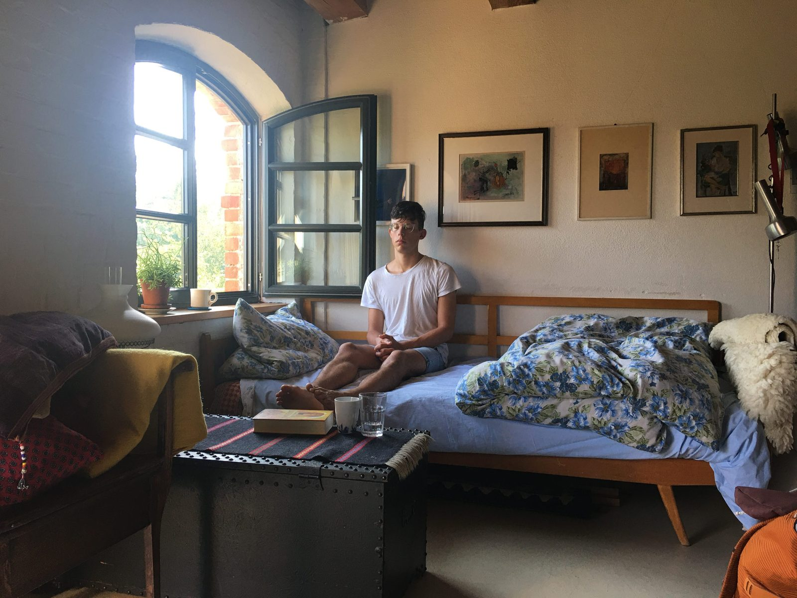

21 Days of Perceptual Practice
What if perception — the very way we see and experience the world — were something that we could observe and control? What if perception were a lever for creating freedom and change in daily life?

Over three weeks in August 2020, I sent a daily audio meditation including a practical exercise to about 50 people around the world — delivered each evening on WhatsApp.
Each recording runs around 12 minutes and is designed to be listened to while lying down, on the floor or a bed, with a book under your head and your knees bent toward the ceiling.
The audio series is a deep dive — an intensive journey of self-exploration, spread across three weeks: the first grounded in Alexander Technique and the body’s perceptual habits; the second opening outward through art, movement and the work of artists and thinkers who have inspired me; the third turning toward stillness, chance and the Buddhist tradition.
You may wish to space out your listening, taking in one audio every second day or even once a week. Find your own rhythm — pause where you need to — there is no need to rush.
Programme